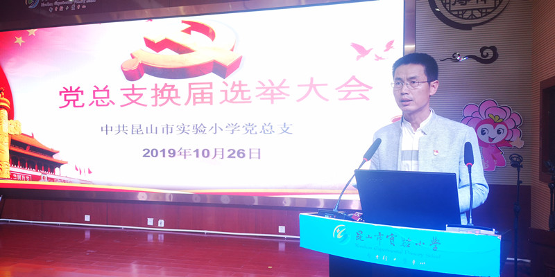
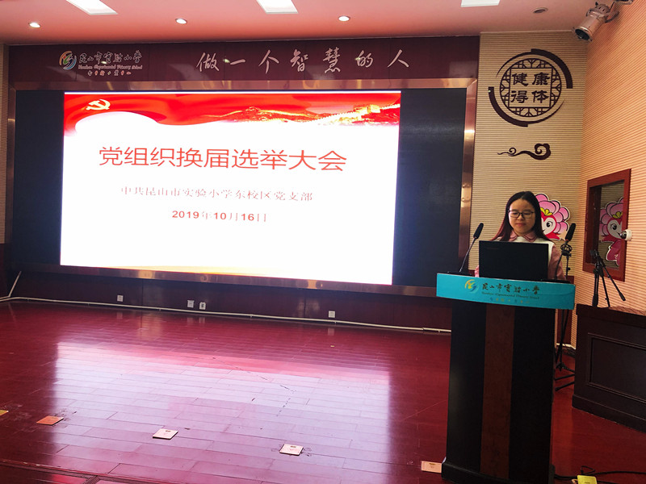
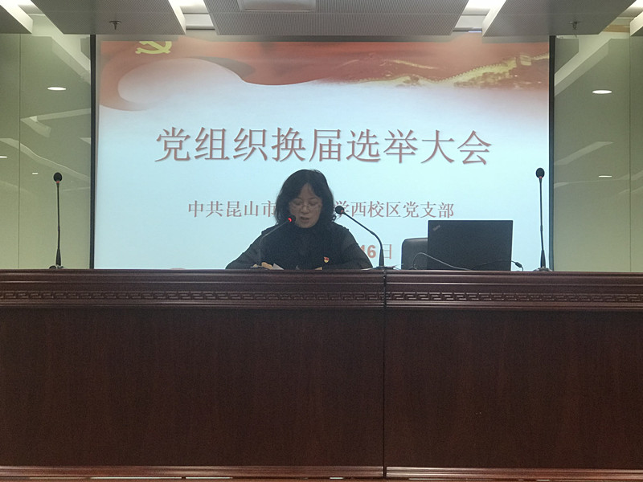
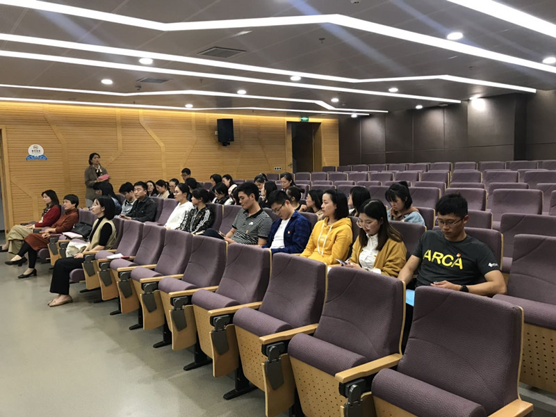

鞍山市铁东区胜利小学欢迎您！
首页 > 详情信息
根据《中国共产党章程》和《中国共产党基层组织选举工作暂行条例》的规定，我校党总支、支部充分做好前期工作的基础上，顺利召开鞍山市铁东区胜利小学党总支（支部）换届选举大会。
实验小学党总支10月26日上午在东校区阶梯教室顺利完成了换届选举工作。吴丽萍同志主持了会议。
会上，党总支书记荣建强同志代表上一届总支委作了工作报告。他在报告中实事求是地总结了学校支部三年来的工作成绩，也客观地分析了存在的不足。经在座党员审议，并鼓掌通过了此报告。
会上采取“差额选举”“无记名投票”的方式，荣建强、黄红梅、荣建英、吴丽萍、孙希、周贤鑫和孙凌琳7名同志当选为新一届党总支委员。

各校区支部届选举
2019年10月16日下午，鞍山市铁东区胜利小学东、西校区党支部分别组织召开党员大会，圆满完成了支部委员换届选举工作。 会议由各校区党支部书记主持。
全体与会党员通过“差额选举”“无记名投票”的方式，选举新一届党支部委员会委员。
东校区党支部委员名单：孙凌琳 王娟 徐娟
西校区党支部委员名单：吴丽萍 周琳 王焱

本次换届，将使党总支队伍更年轻、更具活力。换届不换心，换届不换责。换届是为了更好的做好党建工作，迸发更大的组织力量。我相信新的党支部委员会和党总支委员会各位成员，一定能团结带领全体党员一起开创更好的工作局面、促进学校建设的更好发展。